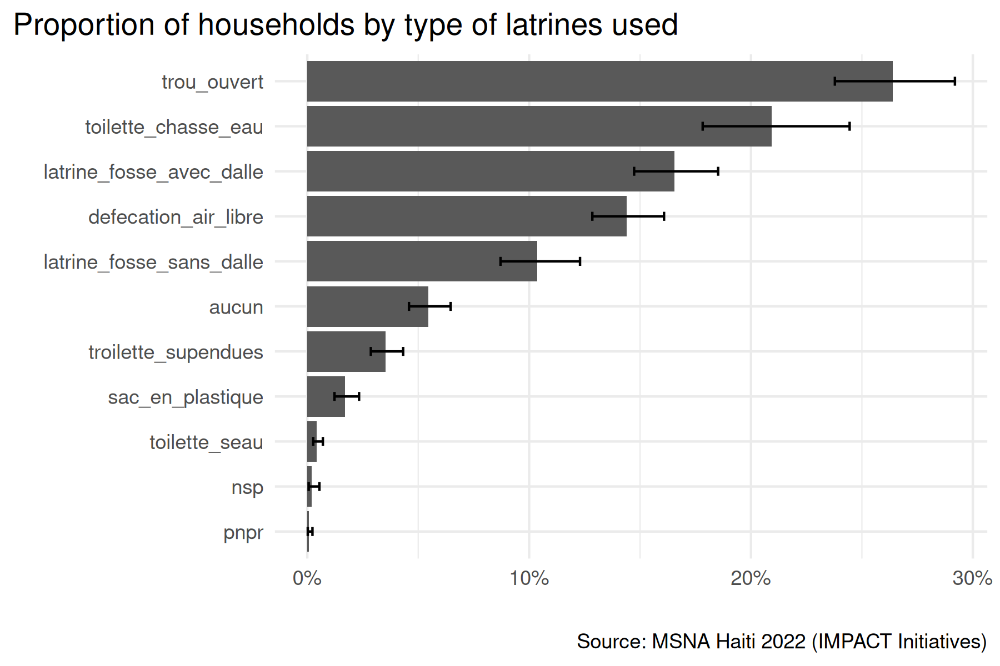
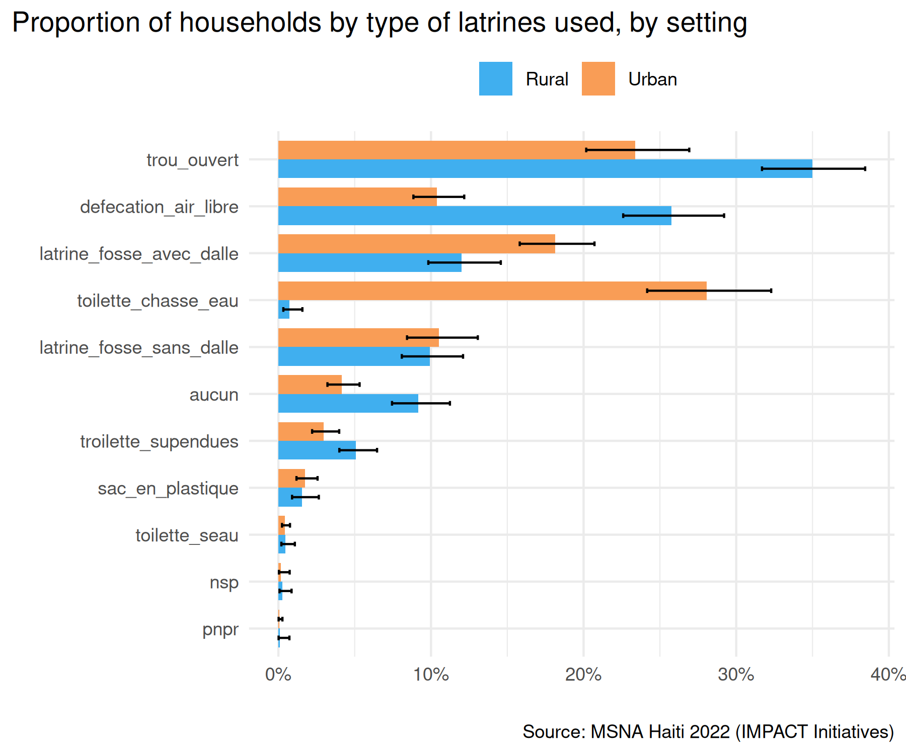

SurveyLiteR provides a streamlined workflow for analyzing survey data based on sampling designs (weights, strata, clusters). Whether you’re working with data collected with KoboToolbox data or any survey data really, this package offers standardized analysis functions built on top of the srvyr package. It standardizes outputs which you can use for faster reporting and visualization.
If you are a (I)NGO or a UN agency analyst, data officer, information management officer, MEAL officer, and you work with survey data, this package is for you!
When to Use SurveyLiteR
|
✅ Perfect for:
|
❌ Not needed for (although working):
|
Although, the package remains useful even if you don’t have weights, strata, or clusters, as it still provides a consistent and easy-to-use interface for survey analysis. Just set weights to 1 and strata/clusters to NULL!
Note that it is shared AS IS WITHOUT ANY WARRANTY, and is not meant to be a drop-in replacement for more comprehensive survey analysis packages like survey or srvyr. It is only designed to simplify common survey analysis tasks.
Quick Start
Installation
# Install from GitHub
pak::pak("gnoblet/SurveyLiteR")Let’s run an example!
The package includes real survey data, coming from a humanitarian Multi-Sector Needs Assessment) run in Haiti by the INGO IMPACT Initiatives in 2022.
library(SurveyLiteR)
# Load the example data
data("design") # Survey design with weights, strata, clusters
data("main") # Survey data (household-level data)
data("survey") # KoboToolbox survey sheet
data("choices") # KoboToolbox choices sheet
data("analysis_dap") # Data Analysis Plan (31 indicators)Now, let’s imagine I want to analyze the variable h_2_type_latrine, which is a single-choice categorical variable about the type of latrines used by the household.
# This is a generic survey analysis function
so <- svy_proportion(design, "h_2_type_latrine")
# This is a specific KoboToolbox analysis function
so <- kobo_select_one(design, "h_2_type_latrine", survey, choices)The analysis run with the kobo_select_one() function returns a data frame with labels and a row per category, along with the weighted proportion, confidence intervals, unweighted counts, number of missing values, etc.. Here is a preview of the output:
so[, .(var_value, stat, stat_low, stat_upp, n_unw)] |> head(5)
#> var_value stat stat_low stat_upp n_unw
#> <char> <num> <num> <num> <int>
#> 1: aucun 0.054484395 0.0458488645 0.064636228 221
#> 2: defecation_air_libre 0.143896781 0.1284883750 0.160812018 636
#> 3: latrine_fosse_avec_dalle 0.165391479 0.1473257185 0.185191407 566
#> 4: latrine_fosse_sans_dalle 0.103669595 0.0871157213 0.122945421 410
#> 5: nsp 0.001886509 0.0006492863 0.005468372 5We can easily visualize the results with ggplot2:
library(ggplot2)
library(scales)
library(forcats)
library(data.table)
# reorder and factor by highest value last (for ggplot2 horizontal bar chart)
so[, var_value := forcats::fct_reorder(var_value, stat, .desc = FALSE)]
# plot
ggplot(so, aes(x = var_value, y = stat)) +
geom_col() +
scale_y_continuous(labels = label_percent()) +
geom_errorbar(
aes(ymin = stat_low, ymax = stat_upp),
width = 0.2,
linewidth = 0.5
) +
labs(
title = "Proportion of households by type of latrines used",
x = "",
y = "",
caption = "Source: MSNA Haiti 2022 (IMPACT Initiatives)"
) +
coord_flip() +
theme_minimal() +
theme(
plot.title.position = "plot"
)
If you want to get labels directly from kobo, you can use: x = var_value_label instead of x = var_value.
Now, let’s disaggregate the results by urban/rural setting, using the group argument:
# Disaggregation by urban/rural setting
so2 <- kobo_select_one(
design,
"h_2_type_latrine",
survey,
choices,
group = "milieu"
)
# reorder and factor by highest value last (for ggplot2 horizontal bar chart)
so2[, var_value := forcats::fct_reorder(var_value, stat, .desc = FALSE)]
# recode group values
so2[,
group_key_value := forcats::fct_recode(
group_key_value,
"Urban" = "urbain",
"Rural" = "rural"
)
]
# plot (using ggplot4.0.0+ palette.fill.discrete)
ggplot(so2, aes(x = var_value, y = stat, fill = group_key_value)) +
geom_col(width = 0.8, position = position_dodge(width = 0.8)) +
scale_y_continuous(labels = label_percent()) +
geom_errorbar(
aes(ymin = stat_low, ymax = stat_upp),
width = 0.2,
linewidth = 0.5,
position = position_dodge(width = 0.8)
) +
labs(
title = "Proportion of households by type of latrines used, by setting",
x = "",
y = "",
fill = "",
caption = "Source: MSNA Haiti 2022 (IMPACT Initiatives)"
) +
coord_flip() +
theme_minimal() +
theme(
plot.title.position = "plot",
legend.position = "top",
palette.fill.discrete = c("#40afefff", "#f99d56ff")
)
Analysis Workflow Decision Tree
What’s your data source?
|
📋 KoboToolbox Data
→ Go to KoboToolbox Workflow |
📊 Other Survey Data
→ Go to General Survey Workflow |
🎛️ KoboToolbox Workflow
Organised analysis plan or automation
Best for: Full analysis with minimal coding with a prepared Data Analysis Plan (DAP) or running quick exploratory analysis from the Kobo Tool.
#kobo_analysis_from_dap(design, analysis_dap, survey, choices)
auto_kobo_analysis(design, survey, choices, level = 0.95, choices_sep = "/")Individual Analysis by Variable Type
| Variable Type | Function | Example |
|---|---|---|
| 📊 Categorical (single) |
kobo_select_one()
|
kobo_select_one(design, “h_2_type_latrine”, survey, choices)
|
| 📊 Categorical (multiple) |
kobo_select_multiple()
|
kobo_select_multiple(design, “h_1_acces_eau”, survey, choices)
|
| 📈 Numeric (symmetric) |
kobo_mean()
|
kobo_mean(design, “c_total_age_3a_17a”, survey, choices)
|
| 📈 Numeric (skewed) |
kobo_median()
|
kobo_median(design, “f_5_depenses_ba”, survey, choices)
|
| ➗ Ratios |
kobo_ratio()
|
kobo_ratio(design, “e_freq_regt”, “c_total_age_3a_17a”, survey, choices)
|
| 🔗 Cross-tabs |
kobo_interact()
|
kobo_interact(design, c(“h_2_type_latrine”, “fcs_cat”), survey, choices)
|
| 🔄 Flexible |
kobo_analysis()
|
kobo_analysis(design, “mean”, “c_total_age_3a_17a”, survey, choices)
|
Batch Analysis Functions: The below functions analyze all variables of a given type in one go, based on the survey and choices sheets.
# Analyze all variables of each type at once
kobo_select_one_all(design, survey, choices)
kobo_select_multiple_all(design, survey, choices)
kobo_mean_all(design, survey, choices)
kobo_median_all(design, survey, choices)⚡ General Survey Workflow
Manual Control by Variable Type
| Variable Type | Function | Example |
|---|---|---|
| 📊 Categorical |
svy_proportion()
|
svy_proportion(design, “h_2_type_latrine”)
|
| 📈 Numeric (symmetric) |
svy_mean()
|
svy_mean(design, “c_total_age_3a_17a”)
|
| 📈 Numeric (skewed) |
svy_median()
|
svy_median(design, “f_5_depenses_ba”)
|
| 📏 Distributions |
svy_quantile()
|
svy_quantile(design, “f_5_depenses_ba”)
|
| ➗ Ratios |
svy_ratio()
|
svy_ratio(design, “e_freq_regt”, “c_total_age_3a_17a”)
|
| 🔗 Cross-tabs |
svy_interact()
|
svy_interact(design, c(“h_2_type_latrine”, “fcs_cat”))
|
| 🔄 Flexible |
svy_analysis()
|
svy_analysis(design, “mean”, “c_total_age_3a_17a”)
|
📋 Data Analysis Plan Format
Create your own DAP based on the included example:
# View the example DAP structure
head(analysis_dap)
# Your DAP should have at least the 'analysis', 'var', and 'na_rm' columns:
my_dap <- data.frame(
analysis = c("mean", "select_one", "select_multiple", "ratio"),
var = c(
"c_total_age_3a_17a", # mean: number of children aged 3-17
"h_2_type_latrine", # select_one: type of latrines
"h_1_acces_eau", # select_multiple: water access issues
"e_freq_regt,c_total_age_3a_17a" # ratio: school attendance rate
),
na_rm = c("yes", "no", "yes", "no"),
sector = c("Demographics", "WASH", "WASH", "Education"),
indicator = c(
"Mean number of children aged 3-17 in household",
"% of households by type of latrine",
"% of households by water access issues",
"School attendance rate among children aged 3-17"
)
)Supported analysis types:
-
"mean"- for numeric variables (e.g.,c_total_age_3a_17a) -
"median"- for skewed numeric variables (e.g.,f_5_depenses_ba) -
"select_one"- for single-choice categorical (e.g.,h_2_type_latrine) -
"select_multiple"- for multiple-choice questions (e.g.,h_1_acces_eau) -
"ratio"- for rates (format: “numerator,denominator”) -
"interact"- for cross-tabulations (format: “var1,var2”)
🔍 Understanding Outputs
All svy_*() functions return standardized data frames with:
-
group_key: Grouping variable (if any) -
group_key_value: Specific group level (if grouped) -
var: Variable name -
var_value: Category/level (for categorical variables) -
stat: Main statistic (mean, proportion, etc.) -
stat_low,stat_upp: Confidence interval bounds -
stat_unw: Unweighted statistic -
n_unw: Unweighted sample size -
stat_type: Type of analysis performed -
n_tot_unw: Total sample size for the group (if any, else overall) -
n_tot: Total weighted sample -
na_count_tot: Total missing values for the variable -
analysis_key: Unique identifier for each analysis
For interactions, additional columns like interact_key and interact_key_value are included.
The analysis_key is built as follows: \<stat_type\> @/@ \<var\> %/% \<var_value\> @/@ \<group\> %/% \<group_value\>. For instance, the key for a proportion of Household Hunger Scale (HHS) categories by setting could be: proportion @/@ hhs_cat %/% Little @/@ setting %/% rural.
When using kobo_*() functions, additional metadata columns from the survey and choices sheets are included, such as labels of variables and choices and the type of question.
- 🐛 Report bugs on GitHub—please with MWE.
- 💬 Feature requests goes there too.
- Feel free to reach out on Bluesky or Linkedin (@gnoblet) for questions or help.